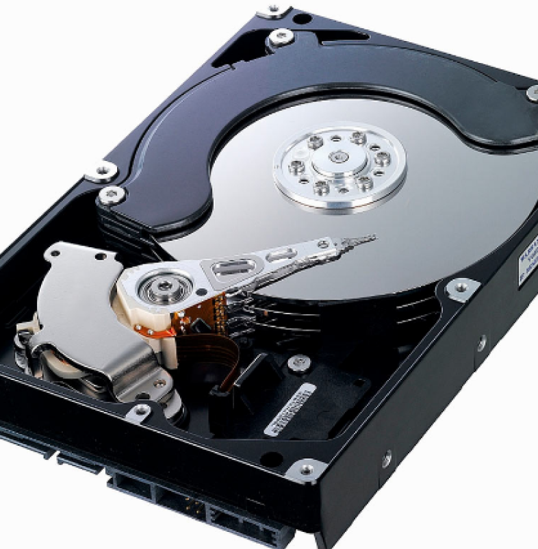
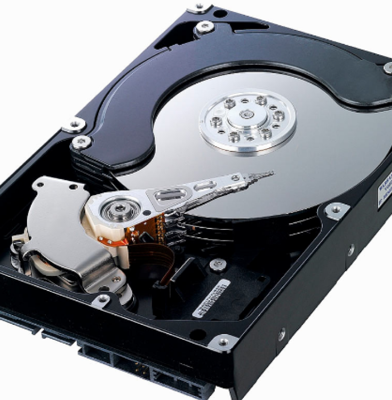

The Wiki of Computer Parts!
 

HDD Storage
HDD (Hard Disk Drive) is a traditional type of storage that uses spinning disks (platters) to read and write data. It stores files magnetically, with a read/write head moving across the disk surface to access data. While HDDs offer larger storage capacities at a lower cost, they are slower compared to newer storage options like SSDs (Solid-State Drives) because of the mechanical moving parts. HDDs are commonly used for mass storage and archiving.
How does HDD storage work?
HDD storage stores data on spinning magnetic disks. It holds files, programs, and the operating system, allowing the computer to access and retrieve them when needed. The data is written and read by a moving head on the disk. While slower than newer SSDs, HDDs offer large storage capacities at a more affordable price.
What is the price range?
- 1. Entry-level HDD storage: $30 to $60 (suitable for basic storage needs, typically offering capacities of 500GB to 1TB for casual users and light tasks).
- 2. Mid-range HDD storage: $60 to $120 (ideal for general use, providing 1TB to 2TB of storage for gaming, media, and moderate workloads).
- 3. High-end HDD storage: $120 to $200 (offers larger capacities (2TB to 4TB), faster speeds, and improved durability for more demanding storage needs).
- 4. Premium HDD storage: $200 and above (high-capacity drives (4TB and above) for professional use, often featuring enhanced performance and reliability for extensive data storage).
*These prices can fluctuate based on brand, specifications, and market demand.